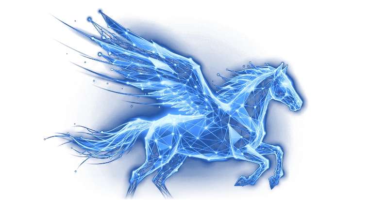
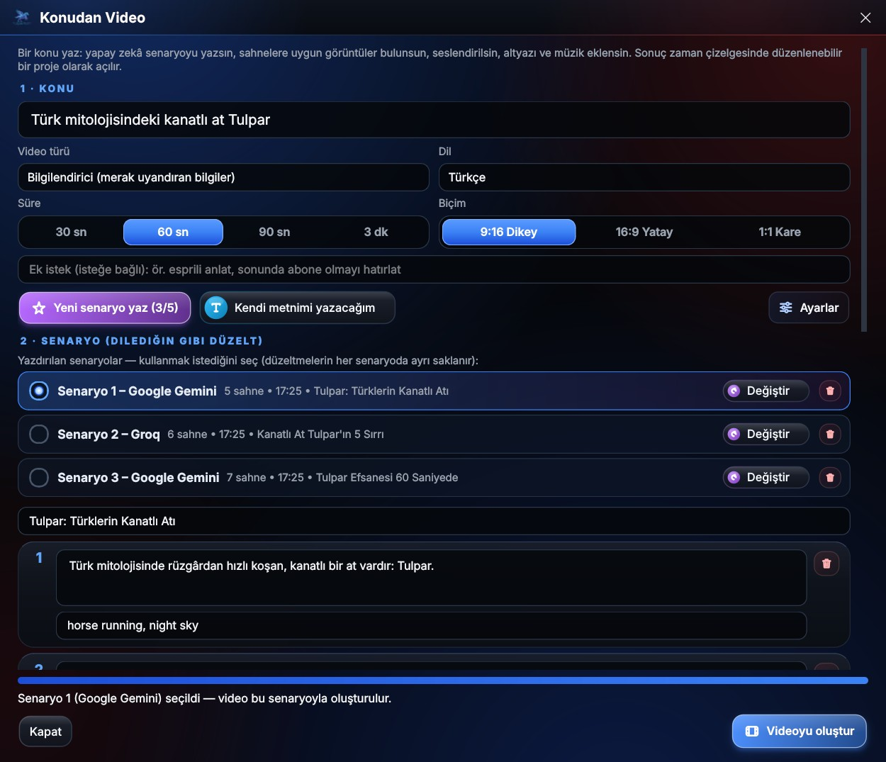
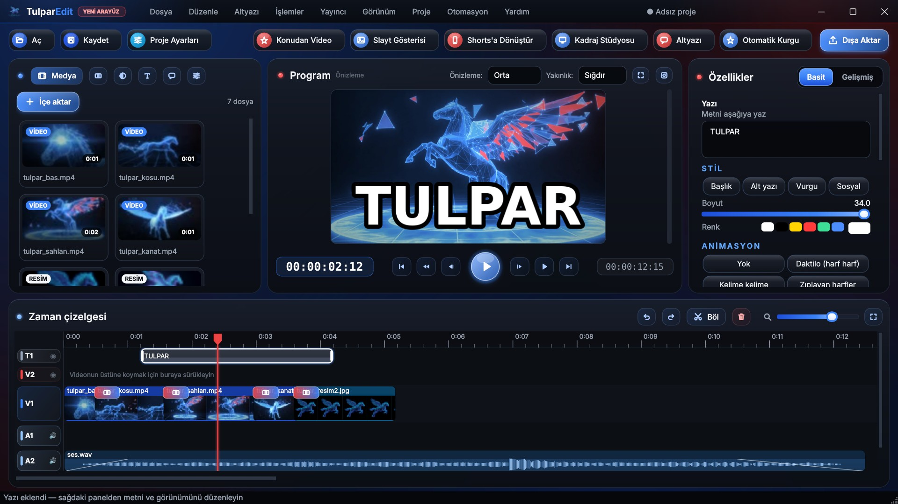

Sürüm 1.3 · Yeni: Konudan Video
Videolarını yapay zekâyla, hızlıca düzenle.
TulparEdit ile
Ücretsiz Windows video düzenleme programı. Kes, birleştir, altyazı ekle; bir konu yaz, yapay zekâ senaryoyu yazsın, görüntüleri bulsun ve seslendirsin. Shorts, Reels ve YouTube için hazır.
Windows 10 / 11 (64 bit) · Reklam yok · Abonelik yok · Hesap gerekmez

1 dakikada TulparEdit
Programın neler yapabildiğini kısa tanıtım videosunda izle.
Neler yapabilir?
Bir video düzenleyicide ihtiyacın olan her şey, sade ve hızlı.
Konudan Video nasıl çalışır?
Fikirden düzenlenebilir projeye dört adım.

Ekran görüntüleri
Yeni tasarım: koyu, sade ve akıcı.
